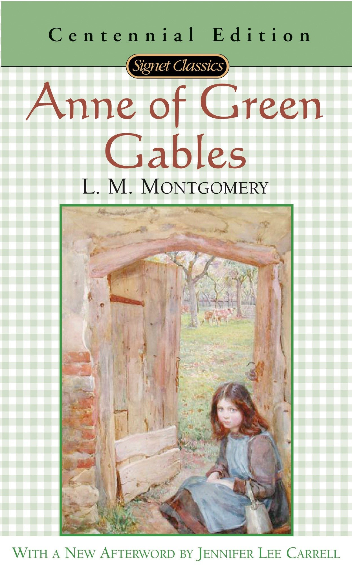

"Anne of Green Gables"
- Read on 2017-12-18
- Rating: ️️️️️
- Format: 🎧 (9 hours 22 minutes)
What a character. What a drama queen. The youthful, rambling nature of Anne is both endearing, and absolutely crazy. I'm not an 11-year old girl (nor have I ever been), and I'll go out on a limb to say I'm not the target audience of this book. That said, I bet both of my daughters would enjoy this book, and especially Anne, with her wild imagination and perspective. Marilla's calm and collected nature is to be applauded in the face of such a torrent, and I find Matthew's tender affection to be charming.
- Prior: The Boys in the Boat
- Next: The Hangman's Daughter